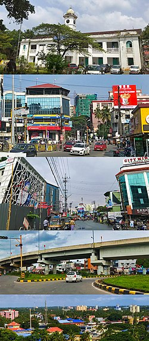
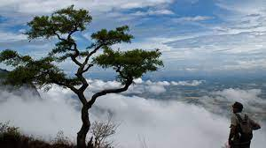
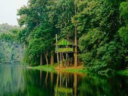
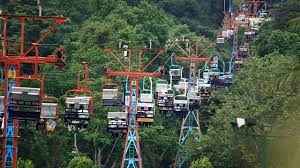

Palakkad District, in the southeastern part of the former Malabar district, is one of the 14 districts of the South Indian state of Kerala. It is located right in the middle of the state. It is included in South Malabar region. Also, it is the largest district in Kerala since 2006.
Nelliyampathy is a hill station within the Nelliyampathy Forest Reserve, in the southwest Indian state of Kerala. The road to it, which goes through the dense forests of the Western Ghats, is known for its many hairpin turns. To the west is Kesavan Para, a vantage point with views of nearby tea plantations. Farther west is the 19th-century Pothundi Dam. Northeast is the Seetharkundu Viewpoint, with waterfalls nearby.
Parambikulam Tiger Reserve, which also includes the erstwhile Parambikulam Wildlife Sanctuary, is a 391 square kilometres protected area in Kollengode Block, Chittur taluk in Palakkad district of Kerala state, South India. The wildlife sanctuary, which had an area of 285 square kilometres was established in 1973.
Malampuzha Dam is one of the largest dams and reservoirs in Kerala,[2] located near Palakkad, in the state of Kerala in South India, built post independence by the then Madras state. Situated in the scenic hills of the Western Ghats in the background it is a combination of a masonry dam with a length of 1,849 metres and an earthen dam with a length of 220 metres making it the longest dam in the state.[3] The dam is 355 feet high and crosses the Malampuzha River, a tributary of Bharathappuzha, Kerala's second longest river. There is a network of two canal systems that serve the dam's reservoir of 42,090 hectares.
